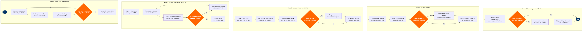

| Step | L4 Step Name | KPI / Target | Pain Point / Risk | Gate |
|---|---|---|---|---|
| 1.1 | Maintain cost centre hierarchy in SAP CO | 100% of cost centres mapped to a valid profit centre before period open | Organisational restructures (e.g. new MRO subsidiary, alliance JV) require manual CO hierarchy redesign; no automated sync from SAP SuccessFactors org chart | |
| 1.2 | Load approved budget baseline into SAP CO | Budget upload completed ≤3 business days after board approval | Manual mapping required between SAP BPC planning dimensions and SAP CO cost element groups; version mismatch causes reforecast figures to overwrite locked baseline | |
| 1.3 | Configure activity types and internal activity rates | Activity rate variance vs prior year ≤5%; all rates signed off by Finance Director | Flight-hour activity rates must be reconciled against Jeppesen crew pairing outputs; late crew schedule changes invalidate planned rate calculations after period open | ⚠ |
| 2.1 | Capture direct cost postings via SAP FI/MM | Invoice processing cycle time ≤2 days; <0.5% posting error rate per period | Aircraft fuel invoices from multi-supplier contracts require manual cost element split between line maintenance and flight operations cost centres; no automated split rule in standard SAP MM | |
| 2.2 | Run periodic assessment cycles for indirect costs | Assessment cycle runtime ≤4 hours; 100% of sender cost centre balances zeroed after cycle | IT infrastructure costs shared across 20+ airline business units require quarterly review of allocation keys; stale keys from pre-cloud migration era overallocate to legacy data centre cost centres | |
| 2.3 | Settle maintenance work orders to cost objects | Work order settlement rate ≥98% within 5 business days of task completion | AMOS-to-SAP CO integration relies on batch interface; late settlement of heavy maintenance C-checks causes significant under-absorption variances in MRO cost centres at period-end | |
| 2.4 | Validate allocation cycles balanced to zero | Unallocated balance <$1,000 (rounding tolerance) per sender cost centre after cycle | Incorrect sender/receiver split factors from ad-hoc project cost centres prevent full balance clearance; requires manual journal workaround which bypasses standard CO cycle logic | ⚠ |
| 3.1 | Extract flight-level unit costs from SAP CO-PA | CASM (Cost per Available Seat Mile) calculated for 100% of operated flights within 48 hours of period close | CO-PA account-based model requires manual derivation rules for mapping operational cost drivers (tail number, route) to profitability segments; missing derivation rules create blank segment records that distort CASM calculations | |
| 3.2 | Join revenue and capacity data via AWS Redshift | Data pipeline latency ≤6 hours after period close; revenue reconciliation variance vs FI ledger <0.1% | Amadeus Altéa proration logic for interline and codeshare itineraries produces estimated revenue splits; actuals are only available after IATA BSP settlement (30-day lag), creating provisional revenue figures in monthly management accounts | |
| 3.3 | Calculate CASM, RASM, and contribution margin | Network contribution margin ≥18% of total revenue; CASM ex-fuel ≤8.5¢ | Allocation of fleet ownership costs (depreciation, lessor rentals) to routes requires arbitrary ASM-based split; aircraft utilisation swings caused by irregular operations distort per-route cost benchmarks | |
| 3.4 | Flag underperforming routes for network review | Routes with contribution margin <5% for 3 consecutive months escalated within 5 business days | Seasonal routes and new route ramp-up periods require judgement-based exclusion from watch-list; absence of a formal ramp-up tolerance policy leads to premature escalation of viable long-term routes | ⚠ |
| 4.1 | Run budget vs actuals comparison in SAP BPC | Variance report published ≤4 business days after period close | SAP BPC data model refresh from S/4HANA requires nightly batch job; ad-hoc reforecasts during the period create multiple BPC plan versions that are difficult to reconcile with the locked baseline | |
| 4.2 | Classify and quantify material variances by type | ≥90% of variances >$50K classified and explained within 5 business days of period close | Fuel price variances require decomposition into volume, price, and hedge settlement components; hedge P&L is recorded in a separate SAP FI treasury module with no direct CO linkage, requiring manual reconciliation | |
| 4.3 | Determine if variance requires CFO escalation | 100% of variances exceeding $500K or 10% of cost centre budget escalated within 24 hours | Materiality thresholds are static (set at year-start) and do not adjust for mid-year reforecast changes; cost centres that received budget cuts become hypersensitive to small nominal variances | ⚠ |
| 4.4 | Conduct root-cause analysis with cost centre managers | Root-cause memo issued within 3 business days of escalation trigger | Operational cost centre managers (e.g. Maintenance Base, Ground Ops) have limited SAP CO access and rely on Finance to extract drill-down data; information asymmetry delays variance explanation by 2–3 days | |
| 5.1 | Compile monthly management accounts pack | Management pack distributed to CFO and ExCo ≤6 business days after period close | Management pack relies on manual Excel consolidation of Tableau outputs, SAP BPC variance reports, and treasury hedge commentary; multi-source assembly creates version control risk and delays when any single source is late | |
| 5.2 | Issue cost reduction directives to business units | Cost reduction directives issued within 2 business days of ExCo approval | Spending authority changes require SAP CO cost centre budget updates AND updates to SAP Ariba procurement approval hierarchies; the two systems are not integrated, so purchasing limits frequently lag behind finance decisions | ⚠ |
| 5.3 | Trigger rolling reforecast cycle in SAP BPC | Rolling reforecast completed and published ≤10 business days after period close | Mid-year capacity changes (aircraft AOG events, network schedule revisions from Amadeus SkyWORKS) invalidate the ASM base used for CASM forecasting; reforecasts become stale within days if not linked to live schedule data |